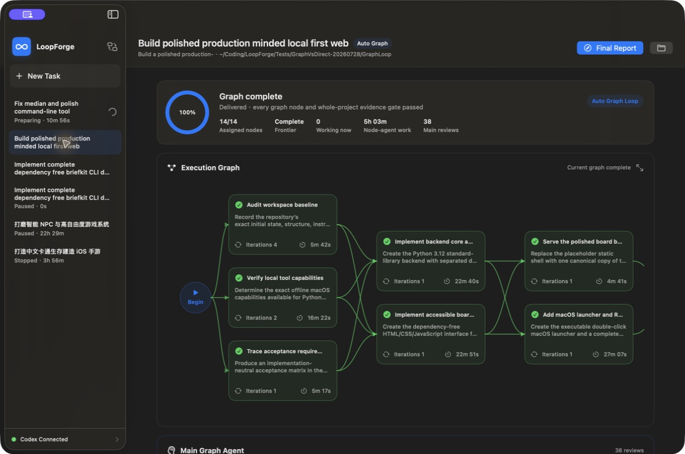
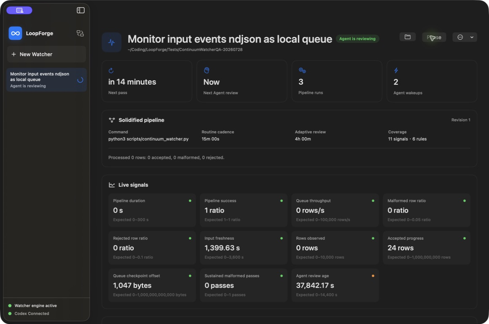
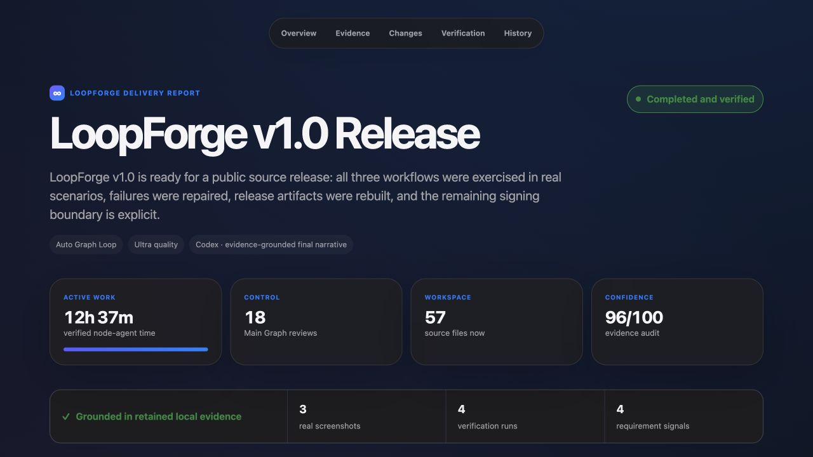

Evidence over confidence
LoopForge audits commands, tests, artifacts, screenshots, and the live workspace before accepting completion.
- Hard active-work targets
- Iterative Main Agent review
- Visible acceptance gaps
Fully open source under Apache 2.0. A native macOS tool built around the Codex agent architecture. Give it one outcome and it automatically plans, runs, audits, recovers, and continues through Single Loop, Auto Graph, or Continuum Watcher.

Long-running work fails at the seams: false completion, broken recovery, unsafe parallelism, and no useful handoff.
LoopForge audits commands, tests, artifacts, screenshots, and the live workspace before accepting completion.
Atomic checkpoints preserve legitimate progress across pauses, crashes, sleep, and infrastructure failures.
Every completed task ends with a local HTML report that explains outcomes, proof, limits, and next actions.
For builds, repairs, migrations, optimization, experiments, and baselines. The control Agent repeatedly audits the workspace and gives the Sub Agent the highest-value next instruction.
Use it for: a release-ready utility, a persistent race, a slow path, or an ML baseline.

Only ready nodes exist. Independent work may run in isolated Git worktrees; a dependent node is dispatched only after its complete predecessor group is integrated and audited.
Use it for: backend + UI + migration, multi-module refactors, or research that must converge into implementation.
Codex first turns routine work into a bounded local pipeline. Rules, failures, staleness, thresholds, or periodic review wake intelligence only when judgment is useful.
Use it for: anomaly monitoring, batch processing, condition alerts, or scheduled data-quality checks.

The final report preserves the original contract, before/after signals, real screenshots, requirement coverage, verification runs, known limits, and the full control history.

LoopForge is an open-source native macOS application that supervises autonomous coding agents. It adds durable recovery, evidence-based audits, safe parallel execution, and a readable final delivery report.
No. The official Codex CLI is included in the app; users do not install it separately. LoopForge uses Codex, OpenAI-compatible APIs, or local models as Agents, then manages the loop and verifies the outcome.
Yes. The Ollama runtime is included, so only the selected model weights are downloaded. Local models use the Codex OSS tool harness; API keys stay in macOS Keychain.
LoopForge first reuses an existing Codex/ChatGPT session. If no session exists, click Connect with ChatGPT and complete the official device authorization in the browser. API and local-model workflows can run without Codex sign-in.
Auto Graph models dependencies explicitly. It dispatches only dependency-ready nodes, isolates safe parallel work in Git worktrees, integrates results, and audits a complete join group before creating dependent work.
Continuum Watcher turns recurring work into a deterministic local pass with bounded telemetry and checkpoints. It wakes an Agent for anomalies, staleness, periodic review, adaptation, or completion—not for idle polling.
The current community build has not yet been Apple-notarized. Users do not configure signing; macOS may require Control-click → Open once. A future notarized release will remove this step.
Download the Apple Silicon build, or inspect every line under the Apache 2.0 license.